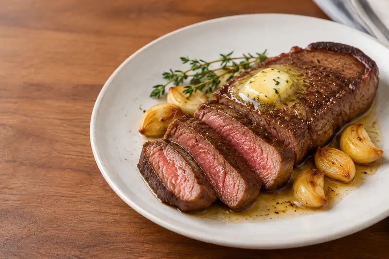
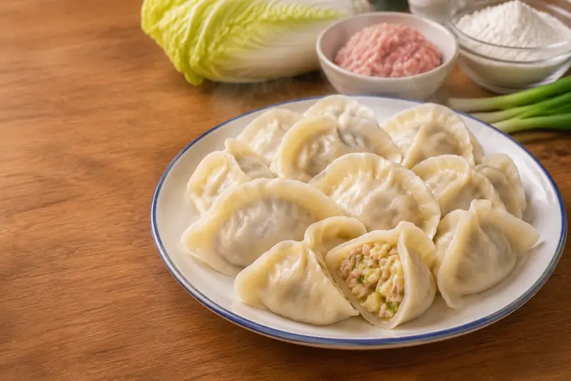

Pantry调味与干货
Black pepper黑胡椒
At Costco在 Costco
Typical pack常见规格: Kirkland Signature fine ground black pepper, 348 g; with grinder 356 gKirkland 黑胡椒粉 348 克；带研磨瓶 356 克
Price seen价格: C$11.99–16.99 (2026-11-16, costco.ca online listings; warehouse prices differcostco.ca 线上目录价，仓库价不同; varies随时变化)
Sample date取样日期 2026-11-16. Availability varies by warehouse and season; this is not a stock guarantee.有无因门店和季节而异，不是库存保证。
Store and portion储存与分装
Store in a cool, dark place; refrigerate opened sauces as the label says; keep oils sealed and away from light.常温避光放；开封后的酱料冷藏（看瓶身标示）；油类避光密封。
Decant a small bottle for daily use and keep the rest sealed.大瓶买回后倒出小瓶常用，其余收好，减少开封次数。
Per 100 g (Canadian Nutrient File)每 100 克（加拿大营养素数据库）
Spices, pepper, black · code 198
251 kcal · protein蛋白 10.39 g · fat脂肪 3.26 g · carbs碳水 63.95 g · fibre纤维 25.3 g · sodium钠 20 mg
No priority allergen.无重点过敏原。
Recipes with this用到它的菜
 Beef Bourguignon法式红酒炖牛肉225 min分钟 · 4 servings份 · French法Irish Beef Stew爱尔兰炖牛肉210 min分钟 · 6 servings份 · Western西式
Beef Bourguignon法式红酒炖牛肉225 min分钟 · 4 servings份 · French法Irish Beef Stew爱尔兰炖牛肉210 min分钟 · 6 servings份 · Western西式 Black Pepper Beef Stir-fry黑椒牛柳43 min分钟 · 2 servings份 · Cantonese粤
Black Pepper Beef Stir-fry黑椒牛柳43 min分钟 · 2 servings份 · Cantonese粤 Harbin-style Borscht with Beef and Cabbage罗宋汤（哈尔滨红汤）120 min分钟 · 6 servings份 · Northeastern Chinese东北
Harbin-style Borscht with Beef and Cabbage罗宋汤（哈尔滨红汤）120 min分钟 · 6 servings份 · Northeastern Chinese东北 Bulgogi (Korean Marinated Beef)韩式烤牛肉 bulgogi（自制腌料）80 min分钟 · 4 servings份 · Korean韩
Bulgogi (Korean Marinated Beef)韩式烤牛肉 bulgogi（自制腌料）80 min分钟 · 4 servings份 · Korean韩 Chicken Caesar Salad with Homemade Dressing and Croutons凯撒沙拉配烤鸡（自制酱汁和面包丁）45 min分钟 · 2 servings份 · Western西式Spaghetti Carbonara培根蛋酱意面25 min分钟 · 4 servings份 · Italian意
Chicken Caesar Salad with Homemade Dressing and Croutons凯撒沙拉配烤鸡（自制酱汁和面包丁）45 min分钟 · 2 servings份 · Western西式Spaghetti Carbonara培根蛋酱意面25 min分钟 · 4 servings份 · Italian意 Chicken and Broccoli Stir-fry鸡胸肉炒西兰花27 min分钟 · 2 servings份 · Chinese home-style家常Chicken Congee鸡肉粥63 min分钟 · 3 servings份 · Cantonese粤
Chicken and Broccoli Stir-fry鸡胸肉炒西兰花27 min分钟 · 2 servings份 · Chinese home-style家常Chicken Congee鸡肉粥63 min分钟 · 3 servings份 · Cantonese粤 Chicken Noodle Soup美式鸡肉蔬菜面汤50 min分钟 · 6 servings份 · Western西式Chicken Parmesan意式帕玛森鸡排45 min分钟 · 4 servings份 · Italian意
Chicken Noodle Soup美式鸡肉蔬菜面汤50 min分钟 · 6 servings份 · Western西式Chicken Parmesan意式帕玛森鸡排45 min分钟 · 4 servings份 · Italian意 Greek Chicken Souvlaki with Tzatziki希腊柠檬烤鸡串配酸奶黄瓜酱65 min分钟 · 4 servings份 · Greek / Mediterranean希腊/地中海New England Clam Chowder新英格兰蛤蜊汤60 min分钟 · 4 servings份 · Western西式Coq au Vin红酒炖鸡155 min分钟 · 4 servings份 · French法
Greek Chicken Souvlaki with Tzatziki希腊柠檬烤鸡串配酸奶黄瓜酱65 min分钟 · 4 servings份 · Greek / Mediterranean希腊/地中海New England Clam Chowder新英格兰蛤蜊汤60 min分钟 · 4 servings份 · Western西式Coq au Vin红酒炖鸡155 min分钟 · 4 servings份 · French法 Sweet Corn Egg Drop Soup粟米蛋花汤25 min分钟 · 4 servings份 · Cantonese粤Egg Fried Noodles鸡蛋炒面16 min分钟 · 2 servings份 · Chinese home-style家常Fish Tacos炸鱼塔可40 min分钟 · 4 servings份 · Western西式
Sweet Corn Egg Drop Soup粟米蛋花汤25 min分钟 · 4 servings份 · Cantonese粤Egg Fried Noodles鸡蛋炒面16 min分钟 · 2 servings份 · Chinese home-style家常Fish Tacos炸鱼塔可40 min分钟 · 4 servings份 · Western西式 Tomato Fish Soup番茄鱼片汤30 min分钟 · 4 servings份 · Chinese home-style家常
Tomato Fish Soup番茄鱼片汤30 min分钟 · 4 servings份 · Chinese home-style家常 Steamed Garlic Butterflied Shrimp蒜蓉开背虾38 min分钟 · 2 servings份 · Cantonese粤
Steamed Garlic Butterflied Shrimp蒜蓉开背虾38 min分钟 · 2 servings份 · Cantonese粤 Greek Roast Leg of Lamb with Lemon Potatoes希腊烤羊腿185 min分钟 · 6 servings份 · Greek / Mediterranean希腊/地中海Greek Salad希腊沙拉20 min分钟 · 4 servings份 · Greek / Mediterranean希腊/地中海
Greek Roast Leg of Lamb with Lemon Potatoes希腊烤羊腿185 min分钟 · 6 servings份 · Greek / Mediterranean希腊/地中海Greek Salad希腊沙拉20 min分钟 · 4 servings份 · Greek / Mediterranean希腊/地中海 Honey Garlic Wings蜜汁蒜香鸡翅45 min分钟 · 2 servings份 · Chinese home-style家常
Honey Garlic Wings蜜汁蒜香鸡翅45 min分钟 · 2 servings份 · Chinese home-style家常 Hot and Sour Soup酸辣汤27 min分钟 · 4 servings份 · Sichuan川
Hot and Sour Soup酸辣汤27 min分钟 · 4 servings份 · Sichuan川 Three-Treasure Dumplings三鲜水饺80 min分钟 · 4 servings份 · Shandong鲁Karaage Fried Chicken日式炸鸡53 min分钟 · 2 servings份 · Japanese日Korean Fried Chicken韩式炸鸡55 min分钟 · 3 servings份 · Korean韩
Three-Treasure Dumplings三鲜水饺80 min分钟 · 4 servings份 · Shandong鲁Karaage Fried Chicken日式炸鸡53 min分钟 · 2 servings份 · Japanese日Korean Fried Chicken韩式炸鸡55 min分钟 · 3 servings份 · Korean韩 Lamb and Carrot Dumplings羊肉胡萝卜水饺85 min分钟 · 5 servings份 · Northeastern Chinese东北Clear Lamb Hot Pot清汤羊肉锅125 min分钟 · 4 servings份 · Chinese home-style家常Xinjiang Lamb Pilaf新疆手抓饭140 min分钟 · 4 servings份 · Northwestern / Xinjiang西北/新疆
Lamb and Carrot Dumplings羊肉胡萝卜水饺85 min分钟 · 5 servings份 · Northeastern Chinese东北Clear Lamb Hot Pot清汤羊肉锅125 min分钟 · 4 servings份 · Chinese home-style家常Xinjiang Lamb Pilaf新疆手抓饭140 min分钟 · 4 servings份 · Northwestern / Xinjiang西北/新疆 Lamb and Daikon Soup白萝卜羊肉汤110 min分钟 · 4 servings份 · Chinese home-style家常Lamb Soup with Bread羊肉泡馍（家常版）115 min分钟 · 3 servings份 · Northwestern / Xinjiang西北/新疆Classic Lasagna千层面120 min分钟 · 6 servings份 · Italian意
Lamb and Daikon Soup白萝卜羊肉汤110 min分钟 · 4 servings份 · Chinese home-style家常Lamb Soup with Bread羊肉泡馍（家常版）115 min分钟 · 3 servings份 · Northwestern / Xinjiang西北/新疆Classic Lasagna千层面120 min分钟 · 6 servings份 · Italian意 Lemon Butter Baked Cod柠檬黄油烤鳕鱼22 min分钟 · 2 servings份 · Western西式Lemon Chicken Orzo柠檬鸡肉米粒面45 min分钟 · 4 servings份 · Greek / Mediterranean希腊/地中海Lion's Head Meatballs清炖狮子头85 min分钟 · 4 servings份 · Jiangnan江浙Baked Mac and Cheese烤芝士通心粉65 min分钟 · 4 servings份 · Western西式
Lemon Butter Baked Cod柠檬黄油烤鳕鱼22 min分钟 · 2 servings份 · Western西式Lemon Chicken Orzo柠檬鸡肉米粒面45 min分钟 · 4 servings份 · Greek / Mediterranean希腊/地中海Lion's Head Meatballs清炖狮子头85 min分钟 · 4 servings份 · Jiangnan江浙Baked Mac and Cheese烤芝士通心粉65 min分钟 · 4 servings份 · Western西式 Minestrone意式蔬菜汤（Minestrone）55 min分钟 · 6 servings份 · Italian意Moussaka希腊茄子肉酱千层145 min分钟 · 6 servings份 · Greek / Mediterranean希腊/地中海Oyster Omelette蚵仔煎20 min分钟 · 2 servings份 · Fujian / Taiwanese闽台Pan-Seared Salmon with Soy Butter酱油黄油煎三文鱼15 min分钟 · 2 servings份 · Chinese home-style家常
Minestrone意式蔬菜汤（Minestrone）55 min分钟 · 6 servings份 · Italian意Moussaka希腊茄子肉酱千层145 min分钟 · 6 servings份 · Greek / Mediterranean希腊/地中海Oyster Omelette蚵仔煎20 min分钟 · 2 servings份 · Fujian / Taiwanese闽台Pan-Seared Salmon with Soy Butter酱油黄油煎三文鱼15 min分钟 · 2 servings份 · Chinese home-style家常
Pan-Seared Butter-Basted Steak平底锅牛排（黄油淋煎）67 min分钟 · 2 servings份 · Western西式Black Pepper Beef Rice Bowl黑椒牛肉饭30 min分钟 · 2 servings份 · Chinese home-style家常
Pork and Napa Cabbage Dumplings猪肉白菜水饺85 min分钟 · 5 servings份 · Northeastern Chinese东北Quiche Lorraine洛林咸派125 min分钟 · 6 servings份 · French法Ratatouille普罗旺斯炖菜80 min分钟 · 4 servings份 · French法Mushroom Risotto蘑菇烩饭45 min分钟 · 4 servings份 · Italian意 Roast Chicken with Root Vegetables烤全鸡（西式，配根茎蔬菜）170 min分钟 · 4 servings份 · Western西式
Roast Chicken with Root Vegetables烤全鸡（西式，配根茎蔬菜）170 min分钟 · 4 servings份 · Western西式 Garlic Roasted Asparagus蒜香烤芦笋17 min分钟 · 3 servings份 · Western西式
Garlic Roasted Asparagus蒜香烤芦笋17 min分钟 · 3 servings份 · Western西式 Rosemary Garlic Lamb Chops迷迭香煎羊排37 min分钟 · 2 servings份 · Western西式
Rosemary Garlic Lamb Chops迷迭香煎羊排37 min分钟 · 2 servings份 · Western西式 Salmon Chowder三文鱼土豆浓汤45 min分钟 · 6 servings份 · Western西式Salmon Fried Rice三文鱼炒饭22 min分钟 · 2 servings份 · Chinese home-style家常
Salmon Chowder三文鱼土豆浓汤45 min分钟 · 6 servings份 · Western西式Salmon Fried Rice三文鱼炒饭22 min分钟 · 2 servings份 · Chinese home-style家常 Sheet-Pan Salmon with Potatoes and Broccoli三文鱼烤盘餐50 min分钟 · 4 servings份 · Western西式Taiwanese Three-Cup Chicken三杯鸡35 min分钟 · 2 servings份 · Fujian / Taiwanese闽台
Sheet-Pan Salmon with Potatoes and Broccoli三文鱼烤盘餐50 min分钟 · 4 servings份 · Western西式Taiwanese Three-Cup Chicken三杯鸡35 min分钟 · 2 servings份 · Fujian / Taiwanese闽台 Scallion Lamb Stir-fry葱爆羊肉36 min分钟 · 2 servings份 · Chinese home-style家常
Scallion Lamb Stir-fry葱爆羊肉36 min分钟 · 2 servings份 · Chinese home-style家常 Shakshuka番茄烩蛋（Shakshuka）35 min分钟 · 3 servings份 · Greek / Mediterranean希腊/地中海Sheet-Pan Sausage and Vegetables香肠烤蔬菜60 min分钟 · 4 servings份 · Western西式Shepherd's Pie牧羊人派105 min分钟 · 6 servings份 · Western西式
Shakshuka番茄烩蛋（Shakshuka）35 min分钟 · 3 servings份 · Greek / Mediterranean希腊/地中海Sheet-Pan Sausage and Vegetables香肠烤蔬菜60 min分钟 · 4 servings份 · Western西式Shepherd's Pie牧羊人派105 min分钟 · 6 servings份 · Western西式 Cantonese Shrimp and Silky Eggs滑蛋虾仁21 min分钟 · 2 servings份 · Cantonese粤
Cantonese Shrimp and Silky Eggs滑蛋虾仁21 min分钟 · 2 servings份 · Cantonese粤 Shrimp Scampi Pasta蒜香黄油虾意面25 min分钟 · 3 servings份 · Italian意
Shrimp Scampi Pasta蒜香黄油虾意面25 min分钟 · 3 servings份 · Italian意 Shrimp Wonton Soup鲜虾云吞汤40 min分钟 · 4 servings份 · Cantonese粤
Shrimp Wonton Soup鲜虾云吞汤40 min分钟 · 4 servings份 · Cantonese粤 Spaghetti with Bolognese Ragu意式番茄肉酱面（博洛尼亚肉酱）175 min分钟 · 4 servings份 · Italian意
Spaghetti with Bolognese Ragu意式番茄肉酱面（博洛尼亚肉酱）175 min分钟 · 4 servings份 · Italian意 Spinach and Tofu Soup菠菜豆腐汤17 min分钟 · 3 servings份 · Chinese home-style家常Pickled Cabbage Fish酸菜鱼38 min分钟 · 3 servings份 · Sichuan川
Spinach and Tofu Soup菠菜豆腐汤17 min分钟 · 3 servings份 · Chinese home-style家常Pickled Cabbage Fish酸菜鱼38 min分钟 · 3 servings份 · Sichuan川 Pickled Cabbage and Pork Belly Stew酸菜白肉95 min分钟 · 4 servings份 · Northeastern Chinese东北Tofu Skin Rolls腐皮卷45 min分钟 · 2 servings份 · Cantonese粤Tonkatsu日式炸猪排50 min分钟 · 4 servings份 · Japanese日Roast Turkey烤火鸡240 min分钟 · 8 servings份 · Western西式
Pickled Cabbage and Pork Belly Stew酸菜白肉95 min分钟 · 4 servings份 · Northeastern Chinese东北Tofu Skin Rolls腐皮卷45 min分钟 · 2 servings份 · Cantonese粤Tonkatsu日式炸猪排50 min分钟 · 4 servings份 · Japanese日Roast Turkey烤火鸡240 min分钟 · 8 servings份 · Western西式 Winter Melon and Shrimp Soup冬瓜虾仁汤40 min分钟 · 4 servings份 · Chinese home-style家常
Winter Melon and Shrimp Soup冬瓜虾仁汤40 min分钟 · 4 servings份 · Chinese home-style家常 West Lake Beef Soup西湖牛肉羹25 min分钟 · 4 servings份 · Jiangnan江浙
West Lake Beef Soup西湖牛肉羹25 min分钟 · 4 servings份 · Jiangnan江浙 Yangzhou Fried Rice扬州炒饭20 min分钟 · 3 servings份 · Jiangnan江浙Crossing-the-Bridge Rice Noodles过桥米线（家常版）65 min分钟 · 2 servings份 · Yunnan / Guizhou云贵
Yangzhou Fried Rice扬州炒饭20 min分钟 · 3 servings份 · Jiangnan江浙Crossing-the-Bridge Rice Noodles过桥米线（家常版）65 min分钟 · 2 servings份 · Yunnan / Guizhou云贵